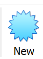
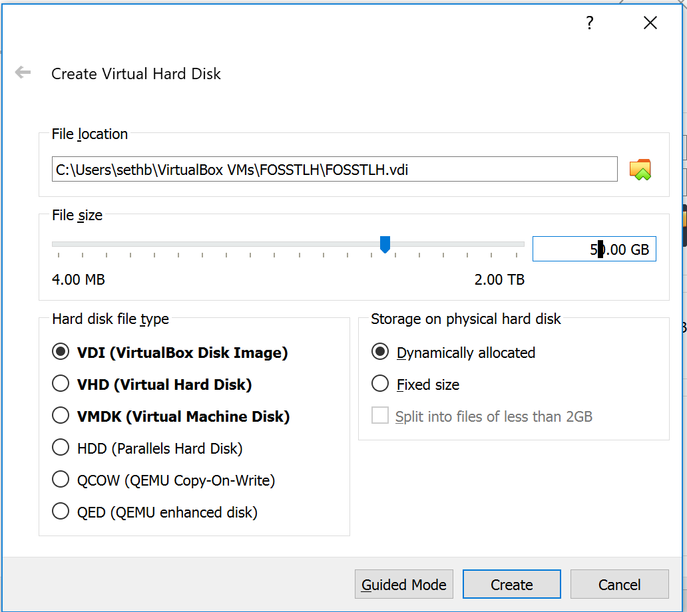
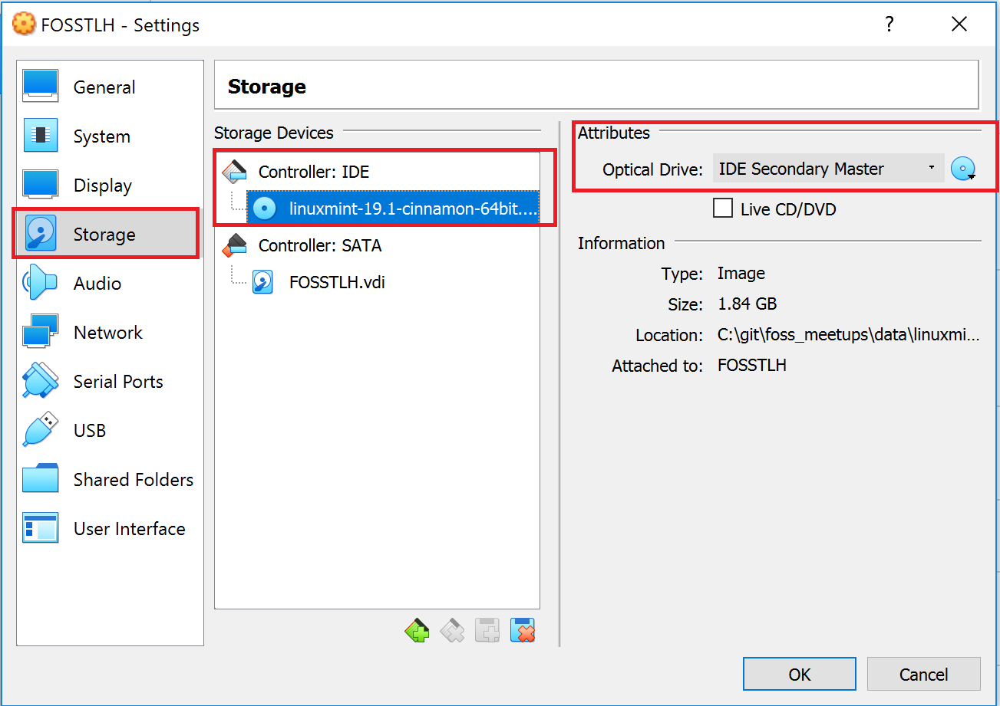

Virtual Machines and Linux Basics
Seth W. Bassett, GISP
April 3, 2019
Virtual Machines & Linux Basics
Virtual Machines
- Simulates hardware
- Host = ‘bare metal OS’
- Guest = the VM
- Host = ‘bare metal OS’
- “A computer within a computer”
- Several available options: VirtualBox, Hyper-V
- Allows one physical server to act as many smaller servers
- Virtualization translates diretly to cloud services
- Compromized guest OS is ‘sandboxed’ and attacker cannot escalate to the host
Why Ubuntu
- Most popular linux distro
- Easy to troubleshoot with google
- Many ‘flavors’ of *buntu
- Ubuntu
- Mint
- Lubuntu
- Xubuntu
- Ubuntu Mate
- Ubuntu Kylin
- Ubuntu Budgie
- Ubuntu
- Ubuntu Server
- All are the same ‘under the hood’ and only the desktop software is different (or, for server, not installed by default)
Why Bash?
- Every ubuntu desktop is different. Bash is always the same.
- Allows you to build recipes or scripts to automatically setup and configure an ubuntu VM
- It is just plain easier once you know what you are doing
Step 1: Allocating a new VM and Installing Ubuntu
VirtualBox: Create a New VM
- Open VirtualBox 2, Click the “New” button

VirtualBox: Allocate Hardware Resources
- Name your VM
- Set a folder that will hold the VM
- Set Type to ‘Linux’
- Set Version to Ubuntu (64-bit)
- Allocate RAM:
+ 4096 Mb for 4 Gb
+ 8192 Mb for 8 Gb
- Select ‘Create a Virtual Hard Disk Now’
VirtualBox: Allocate Hardware Resources

Virtualbox: Allocate HDD Space
VDI is the native format of VirtualBox. I didn’t search for any other software that supports this format.
VMDK is developed by and for VMWare, but Sun xVM, QEMU, VirtualBox, SUSE Studio, and .NET DiscUtils also support it. (This format might be the most apt for you because you want virtualization software that would run fine on Ubuntu.)
VHD is the native format of Microsoft Virtual PC. This is a format that is popular with Microsoft products.
VirtualBox: Allocate HDD Space

VirtualBox: Attach ISO Image to Virtual IDE drive

## Start your virtual machine
* Once the VM boots into Mint, double click on the 'Install Linux Mint' CD icon on the desktop.
* For most screens, accept the defaults.
* Create a username and password. **THIS IS YOUR SUPERUSER PASSWORD YOU MUST REMEMBER IT**
* When you are done, click 'Keep Exploring.' Then go to the Start Menu, click the power icon, and select "Shutdown." When prompted to remove install media, hit enter. BEFORE Turning your new VM on.
- Go into settings and give your new VM some more graphics resources, if available!
- Make sure your IDE Optical Media shows ‘Empty’
Then boot up your new Linux VM. After booting, you can increase your screen size by going to the start menu and searching for ‘display.’
Installing PostGIS
Using Bash
The linux shell is called ‘bash.’ The bash shell language is its own turing-complete programming language. There are many command-line utilities for bash that come pre-installed with linux.
To open bash, press “CTRL-ALT-T” or click on the shell icon.
Basic Bash Commands
# Change Directory
cd /
# List files
ls
ls -l
ls -lha
# Super User Do
sudo ls Basic Bash Commands
# Create file
touch example.txt
# Edit file, CTRL-X to exit.
nano example.txt
# Remove File
rm example.txt
sudo ls Basic Bash Commands
#Install Something
sudo apt-get install htop
# Run it
htop Adding the PostGIS repository
Via the PostGIS website
sudo sh -c 'echo "deb http://apt.postgresql.org/pub/repos/apt bionic-pgdg main" >> /etc/apt/sources.list
wget --quiet -O - http://apt.postgresql.org/pub/repos/apt/ACCC4CF8.asc | sudo apt-key add -
sudo add-apt update
Install PostGIS
sudo apt-get install postgresql-10
sudo apt-get install postgresql-10-postgis-2.4
sudo apt-get install postgresql-10-postgis-scripts
#to get the commandline tools shp2pgsql, raster2pgsql you need to do this
sudo apt-get install postgis